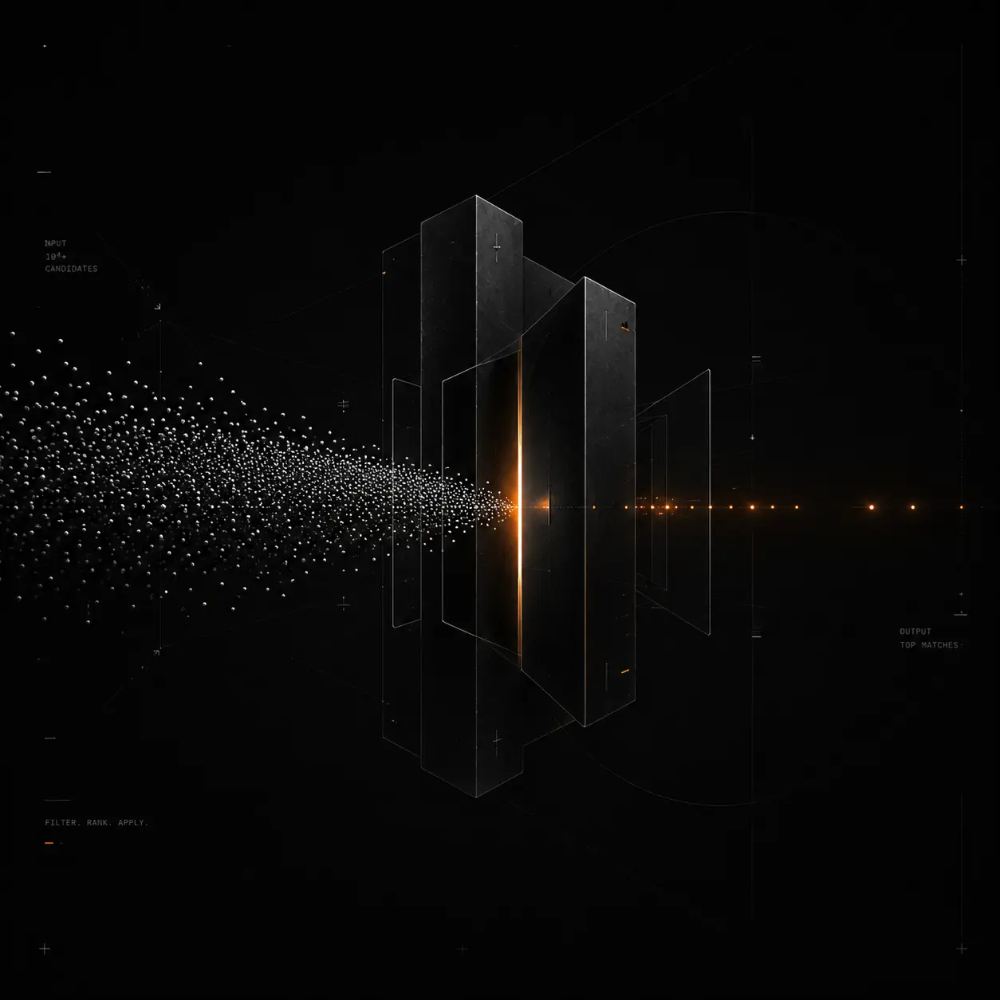

№01
Job-Bot — Automated Job Application System
An automation tool that streamlines the job hunt: it searches postings, filters them against your criteria, and submits applications on your behalf.
- Automated job search and application submission
- Smart filtering based on job criteria
- Résumé and cover-letter customization
PythonWeb ScrapingAutomation
Source ↗

Fig. 01 — Job-Bot